GhostDraft (TST) — page 6

HTML designer — page 6
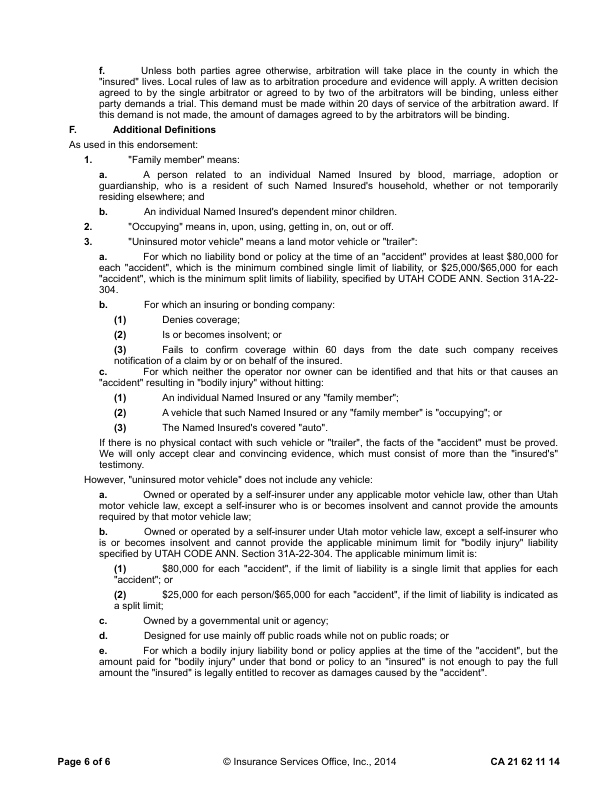
Overlay — 8.8% pixels differ
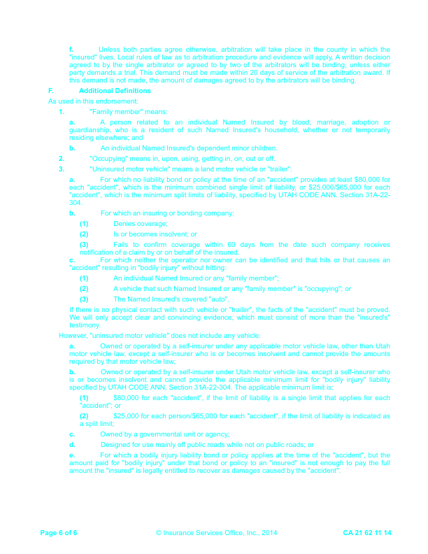
CA2162_1114: DIFFERENT score 99.5% pages golden 5 html 6 (pages with text) words golden 2924 html 2927 missing 13 extra 16 MISSING (in the GhostDraft golden, not in the HTML render) [CPP 0000999 COMMERCIAL] <= POLICY NUMBER:CPP 0000999 00 COMMERCIAL AUTO [0] <= Limit Of Insurance: $0 Each "Accident" [NUMBER] <= 2. The direct or indirect benefit of any insurer or 1. Regardless of the number of covered "autos", [5] <= CA 21 62 11 14 © Insurance Services Office, Inc., 2014 Page 3 of 5 [5] <= exceed $5,000. [5] <= Page 4 of 5 © Insurance Services Office, Inc., 2014 CA 21 62 11 14 [AUTO] <= arbitration award. If this demand is not (3) The Named Insured's covered "auto". [A] <= notification of a claim by or on behalf of e. For which a bodily injury liability bond or [POLICY] <= that bond or policy to an "insured" is not [5 5] <= CA 21 62 11 14 © Insurance Services Office, Inc., 2014 Page 5 of 5 EXTRA (in the HTML render, not in the GhostDraft golden) [6] <= 6. "Bodily injury" arising directly or indirectly out of: [6] <= Page 2 of 6 © Insurance Services Office, Inc., 2014 CA 21 62 11 14 [6] <= CA 21 62 11 14 © Insurance Services Office, Inc., 2014 Page 3 of 6 [6] <= Page 4 of 6 © Insurance Services Office, Inc., 2014 CA 21 62 11 14 [6] <= CA 21 62 11 14 © Insurance Services Office, Inc., 2014 Page 5 of 6 [LIABILITY OF] <= e. For which a bodily injury liability bond or policy applies at the time of the "accident", but the [PAGE 6 OF 6 INSURANCE SERVICES OFFICE INC 2014] <= Page 6 of 6 © Insurance Services Office, Inc., 2014 CA 21 62 11 14 golden C:\src\fact-docgen\src\Moe.Commercial.Documents.Generation.Integration.Tests\TestData\Snapshots\CA2162_1114\GoldenSnapshot.txt template C:\src\fact-poc\output\ghostdraft\batch\CA2162-1114.json serverxml C:\src\fact-poc\output\ghostdraft\serverxml\CA2162_1114\ServerXml.xml
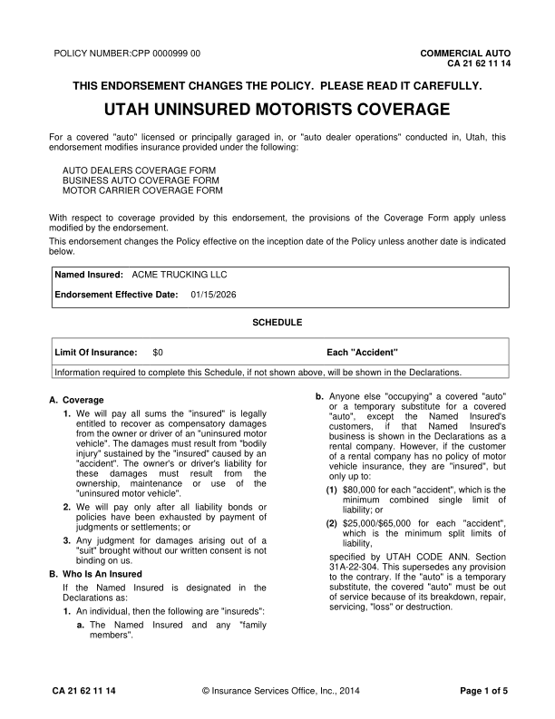
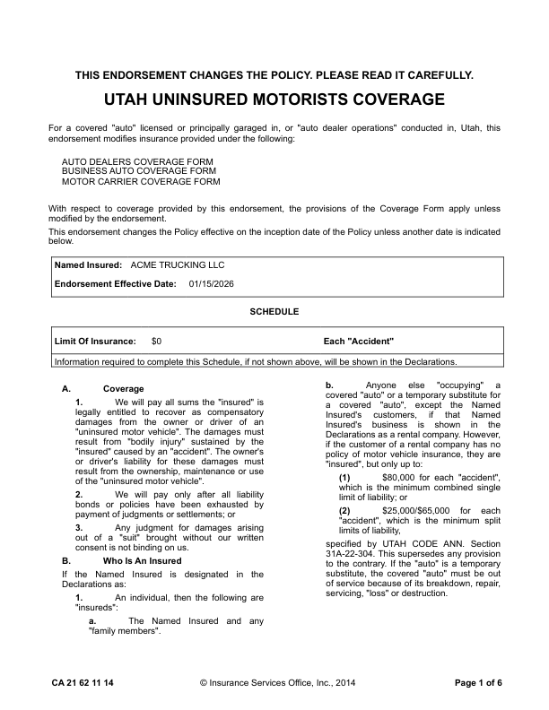
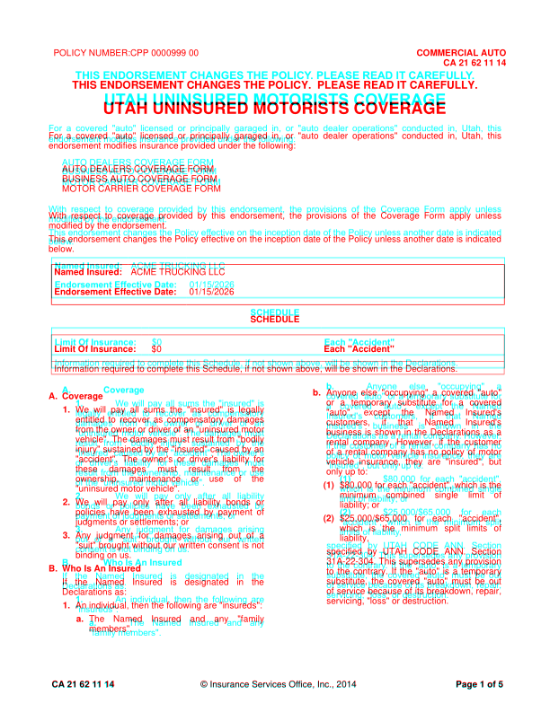
moved THIS (+3.5, -11.1)pt moved ENDORSEMENT (+3.5, -11.1)pt moved CHANGES (+3.5, -11.1)pt moved THE (+3.5, -11.1)pt moved POLICY. (+3.5, -11.1)pt moved PLEASE (-1.1, -11.1)pt moved READ (-1.1, -11.1)pt moved IT (-1.1, -11.1)pt moved CAREFULLY. (-1.1, -11.1)pt moved UTAH (+1.2, -9.7)pt moved UNINSURED (-0.1, -9.7)pt moved MOTORISTS (-0.1, -9.7)pt moved COVERAGE (-0.4, -9.7)pt moved For (+0.0, -8.2)pt moved a (+0.0, -8.2)pt moved covered (+0.0, -8.2)pt moved "auto" (+0.0, -8.2)pt moved licensed (+0.1, -8.2)pt moved or (+0.0, -8.2)pt moved principally (+0.1, -8.2)pt moved garaged (+0.0, -8.2)pt moved in, (+0.1, -8.2)pt moved or (+0.0, -8.2)pt moved "auto (+0.1, -8.2)pt moved dealer (+0.0, -8.2)pt moved operations" (+0.0, -8.2)pt moved conducted (+0.0, -8.2)pt moved in, (+0.0, -8.2)pt moved Utah, (+0.1, -8.2)pt moved this (+0.0, -8.2)pt moved endorsement (+0.0, -8.0)pt moved modifies (-0.0, -8.0)pt moved insurance (-0.0, -8.0)pt moved provided (-0.0, -8.0)pt moved under (-0.0, -8.0)pt moved the (-0.0, -8.0)pt moved following: (-0.0, -8.0)pt moved AUTO (-0.0, -7.7)pt moved DEALERS (-0.2, -7.7)pt moved COVERAGE (-0.2, -7.7)pt moved FORM (-0.2, -7.7)pt moved BUSINESS (-0.0, -8.2)pt moved AUTO (-0.6, -8.2)pt moved COVERAGE (-0.8, -8.2)pt moved FORM (-0.8, -8.2)pt moved MOTOR (-0.0, -8.0)pt moved CARRIER (-0.2, -8.0)pt moved COVERAGE (-0.2, -8.0)pt moved FORM (-0.2, -8.0)pt moved With (+0.0, -8.0)pt moved respect (+0.0, -8.0)pt moved to (+0.1, -8.0)pt moved coverage (+0.0, -8.0)pt moved provided (+0.1, -8.0)pt moved by (+0.1, -8.0)pt moved this (+0.1, -8.0)pt moved endorsement, (+0.1, -8.0)pt moved the (+0.0, -8.0)pt moved provisions (+0.1, -8.0)pt moved of (+0.0, -8.0)pt moved the (+0.1, -8.0)pt moved Coverage (+0.0, -8.0)pt moved Form (+0.1, -8.0)pt moved apply (+0.1, -8.0)pt moved unless (+0.1, -8.0)pt moved modified (+0.0, -7.7)pt moved by (-0.0, -7.7)pt moved the (-0.0, -7.7)pt moved endorsement. (-0.0, -7.7)pt moved This (+0.0, -7.7)pt moved endorsement (+0.0, -7.7)pt moved changes (+0.0, -7.7)pt moved the (+0.1, -7.7)pt moved Policy (+0.1, -7.7)pt moved effective (+0.1, -7.7)pt moved on (-0.0, -7.7)pt moved the (-0.1, -7.7)pt moved inception (-0.0, -7.7)pt moved date (-0.1, -7.7)pt moved of (-0.1, -7.7)pt moved the (+0.0, -7.7)pt moved Policy (-0.0, -7.7)pt moved unless (-0.0, -7.7)pt moved another (+0.0, -7.7)pt moved date (+0.0, -7.7)pt moved is (+0.0, -7.7)pt moved indicated (+0.1, -7.7)pt moved below. (+0.0, -8.2)pt moved Named (+0.4, -7.7)pt moved Insured: (+0.4, -7.7)pt moved ACME (+0.4, -7.7)pt moved TRUCKING (+0.2, -7.7)pt moved LLC (+0.2, -7.7)pt moved Endorsement (+0.4, -7.9)pt moved Effective (+0.4, -7.9)pt moved Date: (+0.3, -7.9)pt moved 01/15/2026 (+0.4, -7.9)pt moved SCHEDULE (+0.1, -8.0)pt moved Limit (+0.5, -8.0)pt moved Of (+0.5, -8.0)pt moved Insurance: (+0.5, -8.0)pt moved $0 (+0.4, -8.0)pt moved Each (+0.4, -8.0)pt moved "Accident" (+0.4, -8.0)pt moved Information (+0.5, -7.5)pt moved required (+0.5, -7.5)pt moved to (+0.5, -7.5)pt moved complete (+0.5, -7.5)pt moved this (+0.5, -7.5)pt moved Schedule, (+0.5, -7.5)pt moved if (+0.5, -7.5)pt moved not (+0.5, -7.5)pt moved shown (+0.4, -7.5)pt moved above, (+0.4, -7.5)pt moved will (+0.4, -7.5)pt moved be (+0.4, -7.5)pt moved shown (+0.4, -7.5)pt moved in (+0.4, -7.5)pt moved the (+0.4, -7.5)pt moved Declarations. (+0.4, -7.5)pt moved b. (+14.9, -7.7)pt moved Anyone (+44.9, -7.7)pt moved else (+53.8, -7.7)pt moved "occupying" (+62.5, -7.7)pt moved a (+71.3, -7.7)pt moved covered (-128.2, +3.5)pt moved "auto" (-129.7, +3.5)pt moved or (+68.4, -7.5)pt moved a (+65.0, -7.5)pt moved temporary (+61.5, -7.5)pt moved substitute (+58.0, -7.5)pt moved for (+54.5, -7.5)pt moved 1. (+14.3, -7.2)pt moved We (+44.3, -7.2)pt moved will (+42.7, -7.2)pt moved pay (+41.2, -7.2)pt moved all (+39.7, -7.2)pt moved sums (+38.2, -7.2)pt moved the (+36.7, -7.2)pt moved "insured" (+35.1, -7.2)pt moved is (+33.6, -7.2)pt moved "auto", (+60.7, -7.2)pt moved except (+58.1, -7.2)pt moved the (+55.4, -7.2)pt moved Named (+52.8, -7.2)pt moved entitled (+35.2, -7.7)pt moved to (+37.8, -7.7)pt moved recover (+40.3, -7.7)pt moved as (+43.0, -7.7)pt moved compensatory (+45.5, -7.7)pt moved customers, (+53.2, -7.7)pt moved if (+53.3, -7.7)pt moved that (+53.3, -7.7)pt moved Named (+53.3, -7.7)pt moved from (+48.9, -7.5)pt moved the (+53.9, -7.5)pt moved owner (+58.8, -7.5)pt moved or (+63.8, -7.5)pt moved driver (+68.8, -7.5)pt moved of (+73.8, -7.5)pt moved an (+78.7, -7.5)pt moved business (+51.7, -7.5)pt moved is (+59.6, -7.5)pt moved shown (+67.3, -7.5)pt moved in (+75.1, -7.5)pt moved the (+82.9, -7.5)pt moved vehicle". (+80.9, -7.2)pt moved The (+81.6, -7.2)pt moved damages (+82.5, -7.2)pt moved must (+83.3, -7.2)pt moved result (-129.7, +3.3)pt moved from (-125.9, +3.3)pt moved "bodily (-122.1, +3.3)pt moved injury" (+94.7, -7.7)pt moved sustained (+98.5, -7.7)pt moved by (+102.4, -7.7)pt moved the (+106.1, -7.7)pt moved of (+70.6, -7.7)pt moved a (+70.6, -7.7)pt moved rental (+70.6, -7.7)pt moved company (+70.4, -7.7)pt moved has (+70.4, -7.7)pt moved no (+70.3, -7.7)pt moved policy (-128.3, +3.5)pt moved of (-127.7, +3.5)pt moved motor (-127.2, +3.5)pt moved or (-113.0, +3.8)pt moved driver's (-111.1, +3.8)pt moved liability (-109.2, +3.8)pt moved for (-107.4, +3.8)pt moved these (+109.3, -7.2)pt moved damages (+103.2, -7.2)pt moved must (+97.0, -7.2)pt moved result (-125.8, +3.3)pt moved from (-135.2, +3.3)pt moved the (-144.5, +3.3)pt moved ownership, (+68.9, -7.7)pt moved maintenance (+61.0, -7.7)pt moved or (+53.1, -7.7)pt moved use (+45.2, -7.7)pt moved (1) (+18.3, -7.2)pt moved $80,000 (+48.2, -7.2)pt moved for (+50.5, -7.2)pt moved each (+52.8, -7.2)pt moved "accident", (+55.1, -7.2)pt moved the (-448.9, -3.5)pt moved "uninsured (+27.8, -7.5)pt moved motor (+27.8, -7.5)pt moved vehicle". (+27.8, -7.5)pt moved minimum (+60.7, -7.7)pt moved combined (+54.4, -7.7)pt moved single (+48.1, -7.7)pt moved 2. (+14.3, -7.5)pt moved We (+44.3, -7.5)pt moved will (+44.9, -7.5)pt moved pay (+45.7, -7.5)pt moved only (+46.5, -7.5)pt moved after (+47.3, -7.5)pt moved all (+48.0, -7.5)pt moved liability (+48.8, -7.5)pt moved bonds (-167.5, +3.8)pt moved or (-295.7, +0.8)pt moved policies (+49.4, -7.2)pt moved have (+51.2, -7.2)pt moved been (+53.0, -7.2)pt moved exhausted (+54.8, -7.2)pt moved by (+56.5, -7.2)pt moved (2) (+18.3, -7.5)pt moved $25,000/$65,000 (+48.2, -7.5)pt moved for (+51.8, -7.5)pt moved each (+55.3, -7.5)pt moved judgments (+52.2, -7.7)pt moved or (+52.2, -7.7)pt moved settlements; (+52.2, -7.7)pt moved or (+52.2, -7.7)pt moved which (+52.7, -7.2)pt moved is (+51.0, -7.2)pt moved the (+49.2, -7.2)pt moved minimum (+47.5, -7.2)pt moved split (+45.8, -7.2)pt moved 3. (+14.3, -7.7)pt moved Any (+44.3, -7.7)pt moved judgment (+44.7, -7.7)pt moved for (+45.0, -7.7)pt moved damages (+45.4, -7.7)pt moved arising (+45.6, -7.7)pt moved out (-170.3, +3.5)pt moved of (-169.1, +3.5)pt moved a (-167.9, +3.5)pt moved "suit" (+49.3, -7.5)pt moved brought (+53.4, -7.5)pt moved without (+57.4, -7.5)pt moved our (+61.4, -7.5)pt moved written (+65.4, -7.5)pt moved specified (+0.0, -7.7)pt moved by (+0.3, -7.7)pt moved UTAH (+0.6, -7.7)pt moved CODE (+0.1, -7.7)pt moved ANN. (-0.3, -7.7)pt moved Section (+0.1, -7.7)pt moved binding (+64.5, -7.2)pt moved on (+64.5, -7.2)pt moved us. (+64.5, -7.2)pt moved 31A-22-304. (+0.0, -7.5)pt moved This (-0.1, -7.5)pt moved supersedes (-0.1, -7.5)pt moved any (-0.0, -7.5)pt moved provision (+0.1, -7.5)pt moved B. (+15.1, -7.2)pt moved Who (+46.1, -7.2)pt moved Is (+46.1, -7.2)pt moved An (+45.7, -7.2)pt moved Insured (+45.7, -7.2)pt moved to (+0.0, -7.2)pt moved the (+0.1, -7.2)pt moved contrary. (+0.2, -7.2)pt moved If (-0.4, -7.2)pt moved the (-0.3, -7.2)pt moved "auto" (-0.3, -7.2)pt moved is (-0.1, -7.2)pt moved a (-0.1, -7.2)pt moved temporary (+0.1, -7.2)pt moved If (-0.0, -7.2)pt moved the (+0.0, -7.2)pt moved Named (+0.1, -7.2)pt moved Insured (+0.1, -7.2)pt moved is (+0.1, -7.2)pt moved designated (+0.1, -7.2)pt moved in (+0.0, -7.2)pt moved the (+0.1, -7.2)pt moved of (+0.0, -7.5)pt moved service (+0.2, -7.5)pt moved because (+0.2, -7.5)pt moved of (+0.4, -7.5)pt moved its (+0.4, -7.5)pt moved breakdown, (+0.5, -7.5)pt moved repair, (+0.6, -7.5)pt moved servicing, (+0.0, -7.2)pt moved "loss" (+0.0, -7.2)pt moved or (+0.0, -7.2)pt moved destruction. (+0.0, -7.2)pt moved 1. (+14.3, -7.7)pt moved An (+44.3, -7.7)pt moved individual, (+46.0, -7.7)pt moved then (+47.7, -7.7)pt moved the (+49.4, -7.7)pt moved following (+51.0, -7.7)pt moved are (+52.7, -7.7)pt moved "insureds": (-160.1, +3.5)pt moved a. (+14.3, +3.5)pt moved The (+44.3, +3.5)pt moved Named (+43.2, +3.5)pt moved Insured (+42.0, +3.5)pt moved and (+40.8, +3.5)pt moved any (+39.7, +3.5)pt moved "family (-165.3, +14.8)pt moved members". (+32.4, +3.8)pt missing h rule at 294.6 (57.7-560.9) missing h rule at 339.4 (57.7-560.9) missing h rule at 373.0 (57.4-560.9) missing h rule at 402.5 (57.4-560.9) missing h rule at 417.0 (57.4-560.9) missing v rule at 57.2 (373.2-416.7) missing v rule at 561.1 (373.2-416.7) extra h rule at 286.9 (57.0-561.8) extra h rule at 331.1 (57.0-561.8) extra h rule at 364.9 (57.0-561.8) extra h rule at 394.9 (57.0-561.8) extra h rule at 409.1 (57.0-561.8) extra v rule at 57.4 (286.5-331.5) extra v rule at 57.4 (364.5-409.5) extra v rule at 561.4 (286.5-331.5) extra v rule at 561.4 (364.5-409.5)
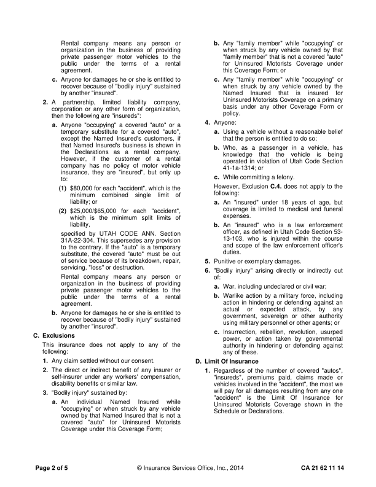
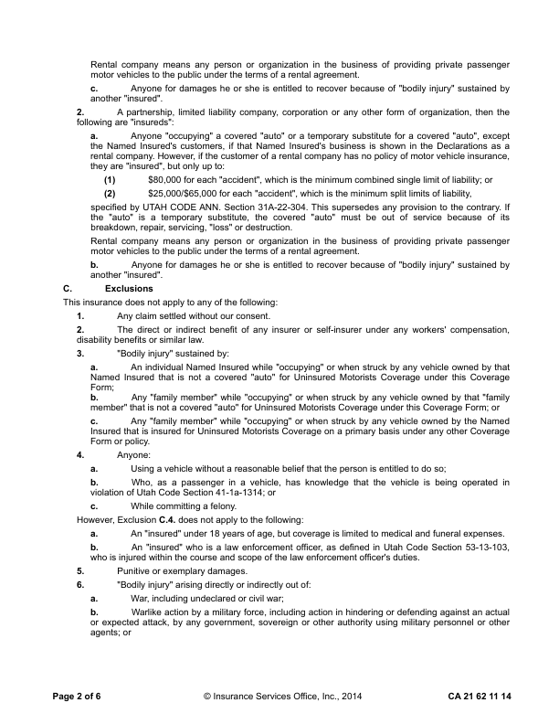
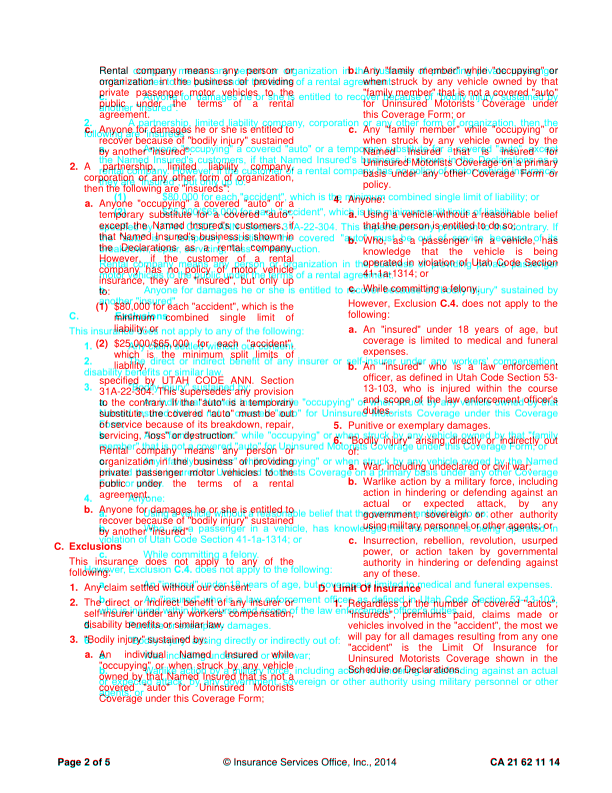
moved company (-3.1, -0.2)pt moved means (-6.2, -0.2)pt moved any (-9.3, -0.2)pt moved person (-12.5, -0.2)pt moved or (-279.6, -0.2)pt moved organization (+183.8, -11.2)pt moved in (+182.7, -11.2)pt moved the (+181.4, -11.2)pt moved business (+180.2, -11.2)pt moved of (+179.0, -11.2)pt moved providing (+177.7, -11.2)pt moved private (+377.1, -22.2)pt moved passenger (+375.2, -22.2)pt moved motor (-90.3, -10.9)pt moved vehicles (-94.3, -10.9)pt moved to (-98.3, -10.9)pt moved the (-102.3, -10.9)pt moved public (+95.0, -21.9)pt moved under (+87.0, -21.9)pt moved the (+78.9, -21.9)pt moved terms (+70.8, -21.9)pt moved of (+62.8, -21.9)pt moved a (+54.7, -21.9)pt moved rental (+46.6, -21.9)pt moved agreement. (+243.9, -32.9)pt moved c. (+14.3, -32.9)pt moved Anyone (+44.3, -32.9)pt moved for (+45.0, -32.9)pt moved damages (+45.5, -32.9)pt moved he (+46.1, -32.9)pt moved or (+46.6, -32.9)pt moved she (+47.2, -32.9)pt moved is (+47.7, -32.9)pt moved entitled (+48.3, -32.9)pt moved to (+48.9, -32.9)pt moved recover (+247.4, -43.9)pt moved because (+248.0, -43.9)pt moved of (+248.5, -43.9)pt moved "bodily (+248.9, -43.9)pt moved injury" (+249.4, -43.9)pt moved sustained (+249.9, -43.9)pt moved by (+448.4, -54.9)pt moved another (-13.3, -43.7)pt moved "insured". (-13.3, -43.7)pt moved 2. (+14.3, -43.7)pt moved A (+44.3, -43.7)pt moved partnership, (+35.8, -43.7)pt moved limited (+27.7, -43.7)pt moved liability (+19.8, -43.7)pt moved company, (+11.7, -43.7)pt moved corporation (+224.9, -54.7)pt moved or (+224.6, -54.7)pt moved any (+224.2, -54.7)pt moved other (+223.8, -54.7)pt moved form (+223.4, -54.7)pt moved of (+223.0, -54.7)pt moved organization, (+222.6, -54.7)pt moved then (+436.6, -65.7)pt moved the (+437.9, -65.7)pt moved following (-38.9, -55.2)pt moved are (-38.9, -55.2)pt moved "insureds": (-38.9, -55.2)pt moved a. (+14.3, -55.2)pt moved Anyone (+44.3, -55.2)pt moved "occupying" (+43.6, -55.2)pt moved a (+42.7, -55.2)pt moved covered (+41.8, -55.2)pt moved "auto" (+41.0, -55.2)pt moved or (+40.2, -55.2)pt moved a (+39.3, -55.2)pt moved temporary (+237.9, -66.2)pt moved substitute (+236.5, -66.2)pt moved for (+235.1, -66.2)pt moved a (+233.7, -66.2)pt moved covered (+232.4, -66.2)pt moved "auto", (+231.0, -66.2)pt moved except (+429.5, -77.2)pt moved the (-34.5, -65.9)pt moved Named (-35.5, -65.9)pt moved Insured's (-36.5, -65.9)pt moved customers, (-37.5, -65.9)pt moved if (-38.6, -65.9)pt moved that (-103.5, -65.9)pt moved Named (+160.8, -76.9)pt moved Insured's (+161.2, -76.9)pt moved business (+161.4, -76.9)pt moved is (+161.7, -76.9)pt moved shown (+162.0, -76.9)pt moved in (+162.3, -76.9)pt moved the (+361.3, -87.9)pt moved Declarations (+357.1, -87.9)pt moved as (+353.0, -87.9)pt moved a (+348.8, -87.9)pt moved rental (-118.4, -76.7)pt moved company. (-123.7, -76.7)pt moved However, (+73.4, -87.7)pt moved if (+66.8, -87.7)pt moved the (+60.8, -87.7)pt moved customer (+54.6, -87.7)pt moved of (+48.6, -87.7)pt moved a (+42.5, -87.7)pt moved rental (+36.4, -87.7)pt moved company (+234.2, -98.7)pt moved has (+231.1, -98.7)pt moved no (+227.9, -98.7)pt moved policy (+224.6, -98.7)pt moved of (+221.5, -98.7)pt moved motor (+218.2, -98.7)pt moved vehicle (+215.1, -98.7)pt moved insurance, (+412.9, -109.7)pt moved they (-51.0, -99.2)pt moved are (-53.1, -99.2)pt moved "insured", (-55.3, -99.2)pt moved but (-57.5, -99.2)pt moved only (-59.6, -99.2)pt moved up (-61.7, -99.2)pt moved to: (+136.0, -110.2)pt moved (1) (+18.2, -110.2)pt moved $80,000 (+48.2, -110.2)pt moved for (+48.2, -110.2)pt moved each (+48.3, -110.2)pt moved "accident", (+48.2, -110.2)pt moved which (+48.2, -110.2)pt moved is (+48.3, -110.2)pt moved the (+48.3, -110.2)pt moved minimum (+230.9, -121.2)pt moved combined (+222.8, -121.2)pt moved single (+214.6, -121.2)pt moved limit (+206.4, -121.2)pt moved of (+198.2, -121.2)pt moved liability; (+381.0, -132.2)pt moved or (+380.9, -132.2)pt moved (2) (+18.2, -132.2)pt moved $25,000/$65,000 (+48.2, -132.2)pt moved for (+42.9, -132.2)pt moved each (+37.5, -132.2)pt moved "accident", (+32.2, -132.2)pt moved which (+214.8, -143.2)pt moved is (+210.4, -143.2)pt moved the (+205.8, -143.2)pt moved minimum (+201.3, -143.2)pt moved split (+196.8, -143.2)pt moved limits (+192.2, -143.2)pt moved of (+187.7, -143.2)pt moved liability, (+370.4, -154.2)pt moved specified (-0.0, -154.2)pt moved by (-2.7, -154.2)pt moved UTAH (-5.4, -154.2)pt moved CODE (-8.9, -154.2)pt moved ANN. (-12.3, -154.2)pt moved Section (-15.0, -154.2)pt moved 31A-22-304. (+183.1, -165.2)pt moved This (+183.2, -165.2)pt moved supersedes (+183.5, -165.2)pt moved any (+183.8, -165.2)pt moved provision (+184.1, -165.2)pt moved to (+382.2, -176.2)pt moved the (+382.0, -176.2)pt moved contrary. (+381.8, -176.2)pt moved If (+380.8, -176.2)pt moved the (-81.5, -164.9)pt moved "auto" (-79.3, -164.9)pt moved is (-76.9, -164.9)pt moved a (-74.7, -164.9)pt moved temporary (-72.3, -164.9)pt moved substitute, (+128.2, -175.9)pt moved the (+129.8, -175.9)pt moved covered (+131.4, -175.9)pt moved "auto" (+133.1, -175.9)pt moved must (+134.7, -175.9)pt moved be (+136.3, -175.9)pt moved out (+138.0, -175.9)pt moved of (+338.5, -186.9)pt moved service (+341.5, -186.9)pt moved because (+344.4, -186.9)pt moved of (+347.4, -186.9)pt moved its (+350.2, -186.9)pt moved breakdown, (-111.5, -175.7)pt moved repair, (-111.8, -175.7)pt moved servicing, (+85.0, -186.7)pt moved "loss" (+85.0, -186.7)pt moved or (+85.0, -186.7)pt moved destruction. (+85.0, -186.7)pt moved Rental (-0.0, -186.7)pt moved company (-3.1, -186.7)pt moved means (-6.2, -186.7)pt moved any (-9.3, -186.7)pt moved person (-12.5, -186.7)pt moved or (-15.6, -186.7)pt moved organization (+183.8, -197.7)pt moved in (+182.7, -197.7)pt moved the (+181.4, -197.7)pt moved business (+180.2, -197.7)pt moved of (+179.0, -197.7)pt moved providing (+177.7, -197.7)pt moved private (+377.1, -208.7)pt moved passenger (+375.2, -208.7)pt moved motor (-90.3, -198.2)pt moved vehicles (-94.3, -198.2)pt moved to (-98.3, -198.2)pt moved the (-102.3, -198.2)pt moved public (+95.0, -209.2)pt moved under (+87.0, -209.2)pt moved the (+78.9, -209.2)pt moved terms (+70.8, -209.2)pt moved of (+62.8, -209.2)pt moved a (+54.7, -209.2)pt moved rental (+46.6, -209.2)pt moved agreement. (+243.9, -220.2)pt moved b. (+14.9, -220.2)pt moved Anyone (+44.9, -220.2)pt moved for (+45.5, -220.2)pt moved damages (+46.0, -220.2)pt moved he (+46.5, -220.2)pt moved or (+47.0, -220.2)pt moved she (+47.6, -220.2)pt moved is (+48.0, -220.2)pt moved entitled (+48.6, -220.2)pt moved to (+49.1, -220.2)pt moved recover (+247.6, -231.2)pt moved because (+248.1, -231.2)pt moved of (+248.6, -231.2)pt moved "bodily (+249.0, -231.2)pt moved injury" (+249.5, -231.2)pt moved sustained (+250.0, -231.2)pt moved by (+448.4, -242.2)pt moved another (-13.3, -230.9)pt moved "insured". (-13.3, -230.9)pt moved C. (+15.1, -230.9)pt moved Exclusions (+46.1, -230.9)pt moved This (-0.0, -230.9)pt moved insurance (-4.3, -230.9)pt moved does (-8.5, -230.9)pt moved not (-12.9, -230.9)pt moved apply (-17.1, -230.9)pt moved to (-21.4, -230.9)pt moved any (-25.7, -230.9)pt moved of (-30.0, -230.9)pt moved the (-34.2, -230.9)pt moved following: (+193.4, -241.9)pt moved 1. (+14.3, -241.9)pt moved Any (+44.3, -241.9)pt moved claim (+44.3, -241.9)pt moved settled (+44.3, -241.9)pt moved without (+44.3, -241.9)pt moved our (+44.3, -241.9)pt moved consent. (+44.3, -241.9)pt moved 2. (+14.3, -241.9)pt moved The (+44.3, -241.9)pt moved direct (+44.9, -241.9)pt moved or (+45.3, -241.9)pt moved indirect (+45.7, -241.9)pt moved benefit (+46.2, -241.9)pt moved of (+46.6, -241.9)pt moved any (+47.0, -241.9)pt moved insurer (+47.5, -241.9)pt moved or (+47.9, -241.9)pt moved self-insurer (+262.5, -252.9)pt moved under (+263.0, -252.9)pt moved any (+263.3, -252.9)pt moved workers' (+263.7, -252.9)pt moved compensation, (+264.1, -252.9)pt moved disability (+0.0, -252.7)pt moved benefits (-0.0, -252.7)pt moved or (-0.0, -252.7)pt moved similar (-0.0, -252.7)pt moved law. (-0.0, -252.7)pt moved 3. (+14.3, -252.7)pt moved "Bodily (+44.3, -252.7)pt moved injury" (+44.3, -252.7)pt moved sustained (+44.3, -252.7)pt moved by: (+44.3, -252.7)pt moved a. (+14.3, -252.7)pt moved An (+44.3, -252.7)pt moved individual (+34.5, -252.7)pt moved Named (+24.7, -252.7)pt moved Insured (+14.8, -252.7)pt moved while (+4.9, -252.7)pt moved "occupying" (+203.2, -263.7)pt moved or (+202.3, -263.7)pt moved when (+201.3, -263.7)pt moved struck (+200.3, -263.7)pt moved by (+199.4, -263.7)pt moved any (+198.4, -263.7)pt moved vehicle (+197.5, -263.7)pt moved owned (+395.7, -274.7)pt moved by (+395.3, -274.7)pt moved that (+395.0, -274.7)pt moved Named (-67.7, -264.2)pt moved Insured (-66.9, -264.2)pt moved that (-66.1, -264.2)pt moved is (-65.3, -264.2)pt moved not (-64.5, -264.2)pt moved a (-63.8, -264.2)pt moved covered (+135.6, -275.2)pt moved "auto" (+131.4, -275.2)pt moved for (+127.1, -275.2)pt moved Uninsured (+122.8, -275.2)pt moved Motorists (+118.4, -275.2)pt moved Coverage (+317.8, -286.2)pt moved under (+319.5, -286.2)pt moved this (+321.2, -286.2)pt moved Coverage (+322.8, -286.2)pt moved Form; (-138.9, -274.9)pt
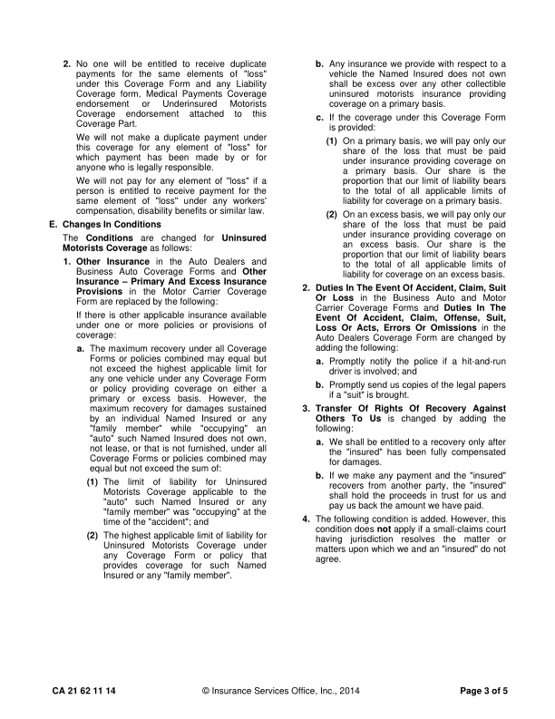
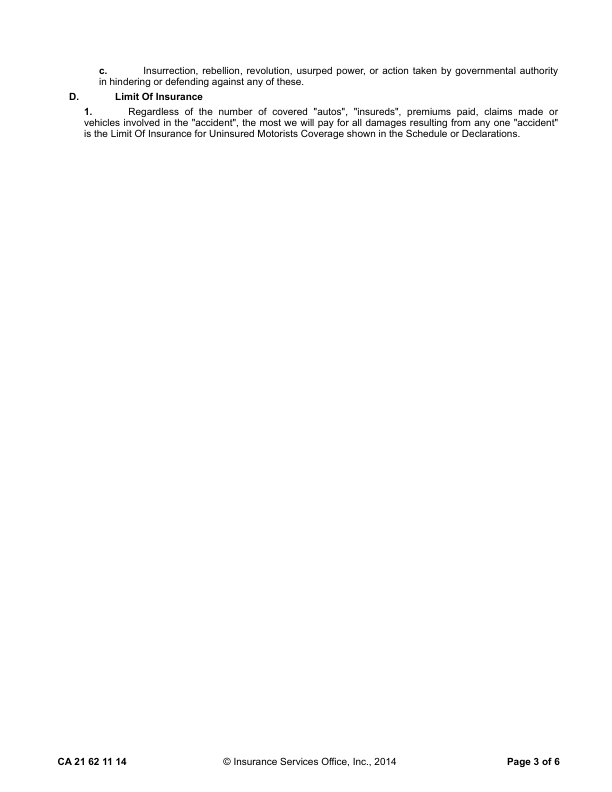
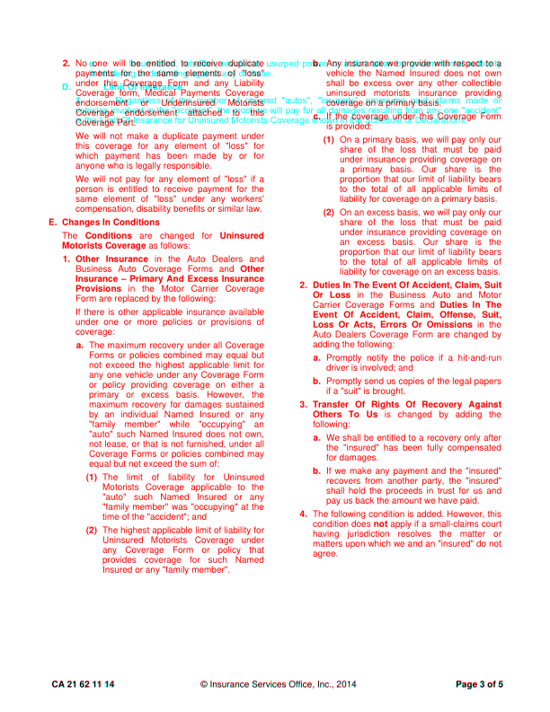
moved the (+45.6, +30.1)pt moved of (+4.5, +30.1)pt moved the (-224.7, +41.3)pt moved the (-130.7, -6.7)pt moved we (-184.9, -32.7)pt moved will (-185.0, -32.7)pt moved pay (-184.9, -32.7)pt moved for (+183.6, -39.7)pt moved any (+302.6, -39.7)pt moved is (-444.1, -55.2)pt moved the (-450.0, -55.2)pt moved for (+34.2, -66.2)pt moved Uninsured (+95.0, -468.2)pt moved Motorists (+89.6, -468.2)pt moved Coverage (+84.0, -468.2)pt moved or (+225.8, -479.2)pt
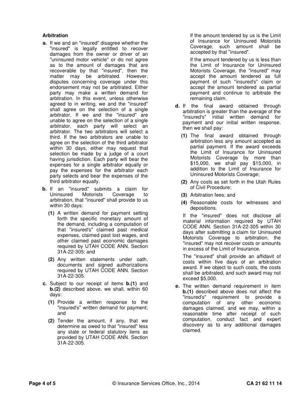
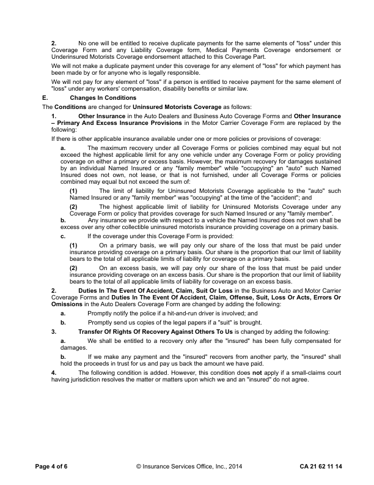
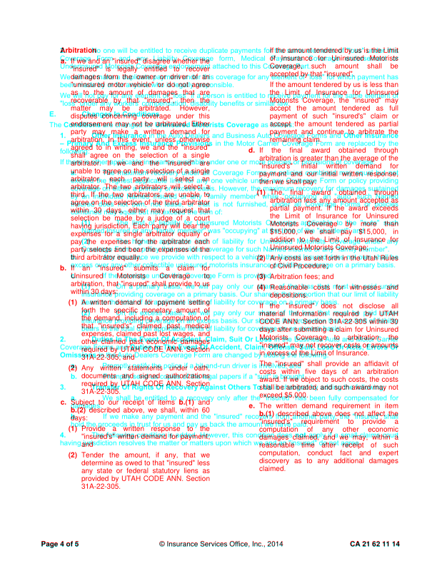
moved by (-345.5, +47.8)pt moved is (-276.7, +47.8)pt moved the (-53.5, +62.8)pt moved of (+172.0, +51.8)pt moved for (-242.5, +93.1)pt moved Uninsured (-247.4, +93.1)pt moved Motorists (-248.3, +93.1)pt moved a. (+14.3, +155.8)pt moved If (+44.3, +299.8)pt moved we (+247.7, +533.8)pt moved and (+247.4, +533.8)pt moved an (+247.2, +533.8)pt moved "insured" (+246.9, +533.8)pt moved do (+212.6, +500.8)pt moved not (+210.8, +500.8)pt size Uninsured 10.0 -> 10.0pt size Motorists 10.0 -> 10.0pt
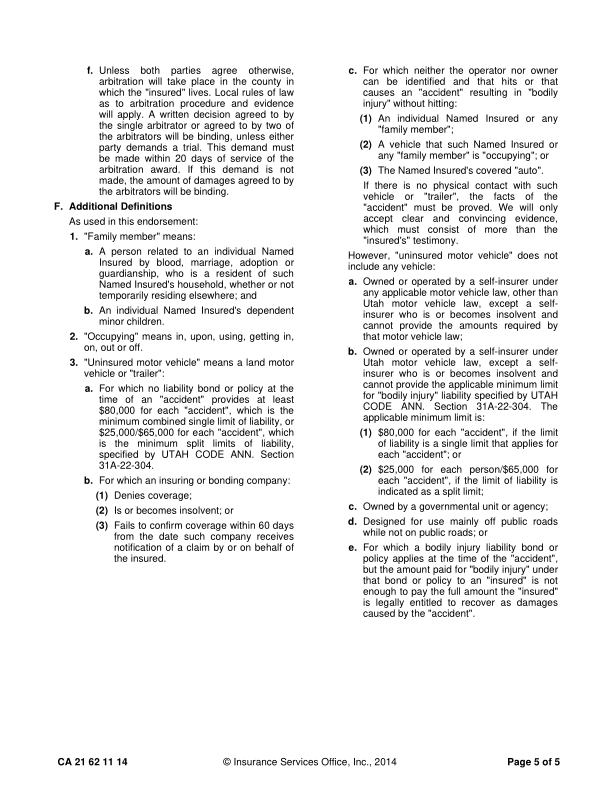
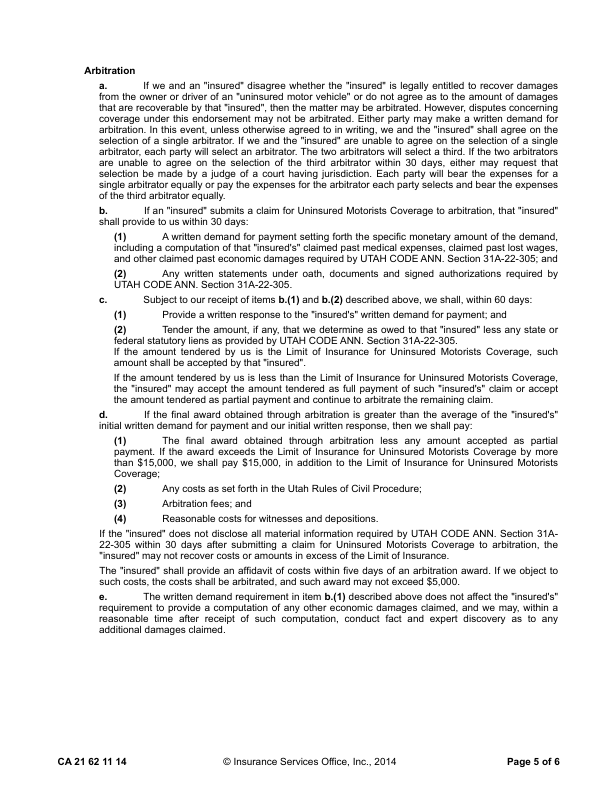
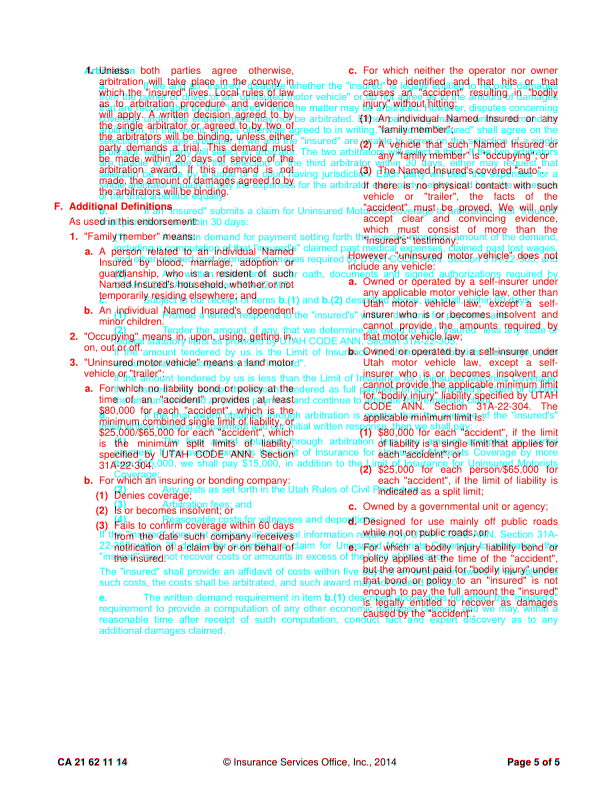
moved and (-284.1, +3.8)pt moved an (-281.3, -495.2)pt moved "insured" (-282.7, -495.2)pt moved the (-172.4, -506.2)pt moved "insured" (-172.2, -506.2)pt moved is (+26.4, -517.2)pt moved legally (+24.4, -517.2)pt moved entitled (+22.4, -517.2)pt moved to (+20.3, -517.2)pt moved recover (+18.3, -517.2)pt moved as (-74.5, -505.9)pt moved damages (+0.1, -505.9)pt moved by (-206.8, -505.7)pt moved the (-119.0, -505.7)pt

